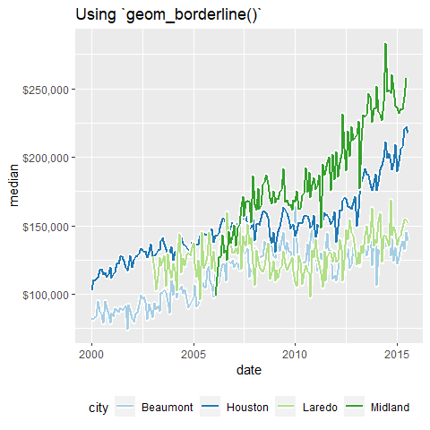

{ggborderline} provides a set of geoms to make line plots a little bit nicer. Use this package along with ggplot2 to:
- Improve the clarity of line plots with many overlapping lines
- Draw more realistic worms
Usage
You can use ggborderline by swapping out {ggplot2} line geoms with their ‘border’ equivalents. For example, here is the effect of swapping ggplot2::geom_line() for geom_borderline(). Notice the white outline of lines in the first plot where different lines intersect:
library(ggborderline)
library(ggplot2)
library(dplyr, warn.conflicts = FALSE)
p <- txhousing |>
filter(
city %in% c("Houston", "Midland", "Beaumont", "Laredo"),
!is.na(median)
) |>
ggplot(aes(date, median, colour = city)) +
scale_y_continuous(labels = scales::label_dollar()) +
scale_colour_brewer(palette = "Paired") +
theme(legend.position = "bottom")
p + geom_borderline(linewidth = 1) + ggtitle("Using `geom_borderline()`")
p + geom_line(linewidth = 1) + ggtitle("Using `geom_line()`")
This effect is best applied conservatively, hence the ‘default’ settings will only make a subtle (but hopefully positive) difference to existing plots. However you can still adjust the borderwidth and bordercolour aesthetics. Notice that the border is also much more noticable in the legend too:
library(ggdark)
plot +
geom_borderline(
aes(bordercolour = after_scale(invert_colour(colour))),
borderwidth = 1, linewidth = 2
)
#> NULL
Installation
You can install the released version of ggborderline from CRAN with:
install.packages("ggborderline")The development version of ggborderline can be installed from github with:
remotes::install_github("wurli/ggborderline")Inspiration
I made this package after seeing this plot tweeted by Rosamund Pearce, an experience that forever soured me to lines without borders:I designed my first double-page #dataviz for The Economist!
— Rosamund Pearce (@_rospearce) July 2, 2021
It depicts our new ‘Normalcy index’, which tracks the world’s return to pre-pandemic life >> https://www.economist.com/graphic-detail/2021/07/03/our-normalcy-index-shows-life-is-halfway-back-to-pre-covid-norms pic.twitter.com/1sIUMoZco1
Other Approaches
While these effects can be achieved using {ggplot2} alone if you have the patience, there are other packages which provide other methods for achieving bordered lines. {ggfx} is much more powerful, but would perhaps be overkill for something as simple as adding a border around a line. {ggshadow} is another great alternative which implements the shadow using a slightly different approach, and also comes with some other handy features. You are encouraged to try both!
Credit
This package would not have been possible without the fantastic ggplot2 package, and would have been very difficult without the accompanying book. My humble and sincere thanks go to all the authors and developers who make projects like this possible.